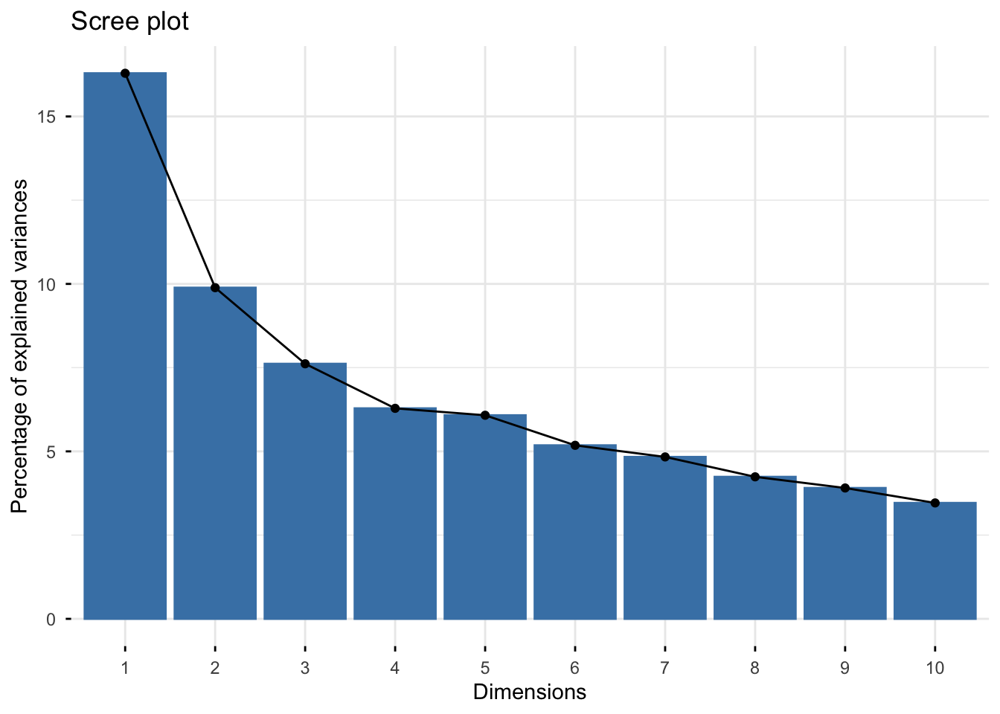
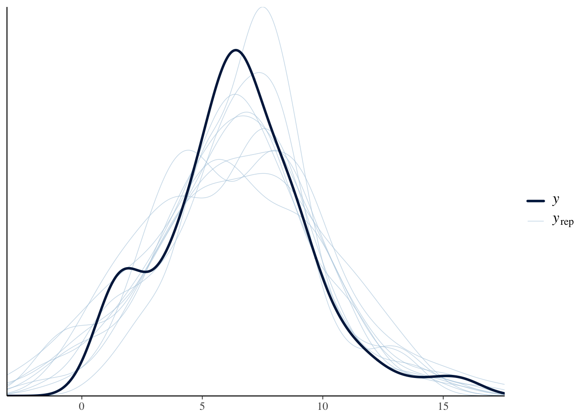
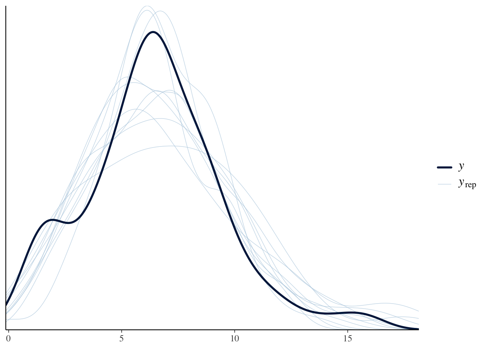
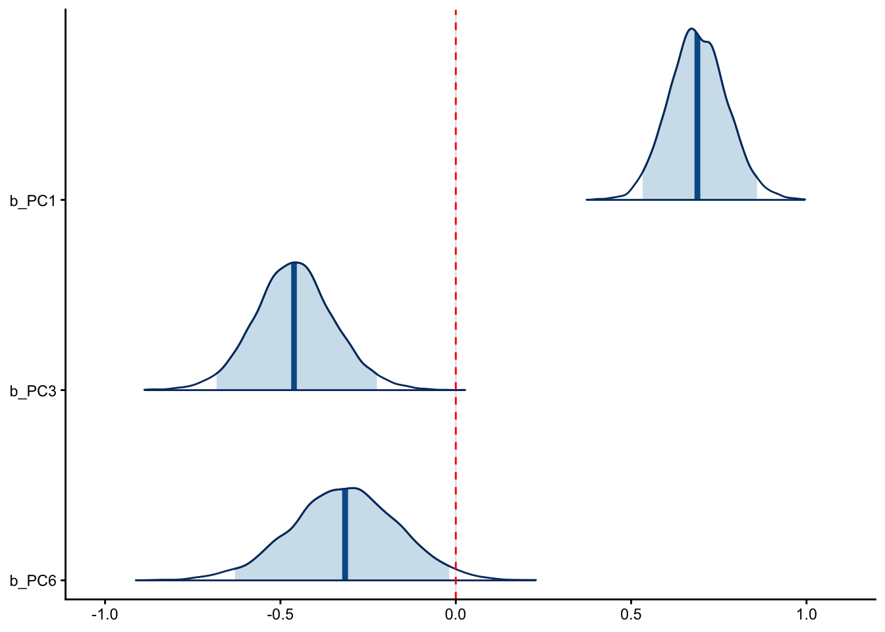
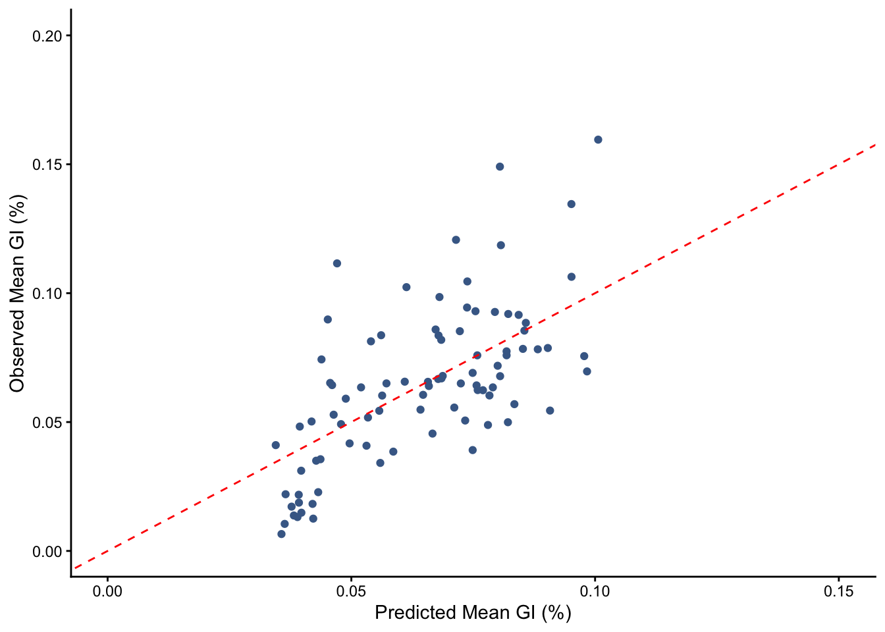
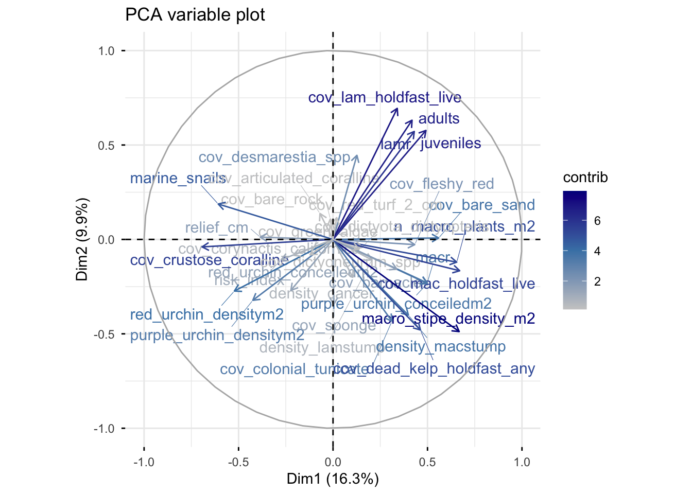

library(tidyverse) #data wrangling (includes other packages)
library(dplyr) #data wrangling
library(ggplot2) #plotting
library(brms) #Bayesian statistics
library(bayesplot) #posterior probability distributions
library(factoextra) #variance plot (scree plot)Explanatory Data Analysis
1. Load Relevant Packages
2. Data Wrangling
explain where the data came from and why we select certain columns
#raw data
predictors_raw <- readRDS("quad_build3.rds")
#select relevant columns and delete rows with NA values
predictors <- predictors_raw %>%
mutate(juveniles = macj + nerj + ptej + lsetj + eisj,
n_macro_plants_m2 = n_macro_plants_20m2/20,
macro_stipe_density_m2 = macro_stipe_density_20m2/20,
adults = (density20m2_ptecal + density20m2_eisarb + density20m2_nerlue + density20m2_lamset)/20,
marine_snails = tegula_densitym2 + pomaulax_densitym2,
density_cancer = density20m2_cancer_spp/20,
density_lamstump = density20m2_lamstump/20,
density_macstump = density20m2_macstump/20) %>%
dplyr::select(mean_gi, n_macro_plants_m2, macro_stipe_density_m2, adults, juveniles, density_cancer, density_lamstump, density_macstump, relief_cm, risk_index, purple_urchin_densitym2, purple_urchin_conceiledm2, red_urchin_densitym2, red_urchin_conceiledm2, marine_snails, lamr, macr, cov_crustose_coralline, cov_desmarestia_spp, cov_lam_holdfast_live, cov_articulated_coralline, cov_fleshy_red, cov_bare_rock, cov_green_algae, cov_barnacle, cov_bare_sand, cov_colonial_tunicate, cov_dictyota_dictyopteris, cov_sponge, cov_dead_kelp_holdfast_any, cov_mac_holdfast_live, cov_red_turf_2_cm, cov_corynactis_californica, cov_dictyoneurum_spp) %>%
na.omit()3. Principal Component Analysis
- Explain why we chose PCA
Step 1: PCA
#run PCA: run only on predictor variables, not the response variable (mean_gi)
#standardize variables
pca <- prcomp(predictors %>%
dplyr::select(-mean_gi),
scale. = TRUE)
#visualize
fviz_eig(pca)Warning in geom_bar(stat = "identity", fill = barfill, color = barcolor, :
Ignoring empty aesthetic: `width`.
#create matrix of raw PC scores (chosen from scree plot)
pc_scores <- as.data.frame(pca$x[, 1:10])
#add response variable (mean_gi) into new dataframe
pc_data <- pc_scores %>%
mutate(mean_gi = predictors$mean_gi)
#set priors for brm
priors_pca <- c(
prior(normal(0, 1), class = "b"),
prior(normal(6.5, 2), class = "Intercept"), #mean mean_gi is ~6.5
prior(student_t(3, 0, 2), class = "sigma"))
#run brm model
model_pca <- brm(mean_gi ~ .,
data = pc_data,
family = gaussian(),
prior = priors_pca,
chains = 4, iter = 4000, warmup = 2000,
cores = 4)Compiling Stan program...Trying to compile a simple C fileRunning /Library/Frameworks/R.framework/Resources/bin/R CMD SHLIB foo.c
using C compiler: ‘Apple clang version 17.0.0 (clang-1700.6.3.2)’
using SDK: ‘MacOSX26.2.sdk’
clang -arch arm64 -std=gnu2x -I"/Library/Frameworks/R.framework/Resources/include" -DNDEBUG -I"/Library/Frameworks/R.framework/Versions/4.5-arm64/Resources/library/Rcpp/include/" -I"/Library/Frameworks/R.framework/Versions/4.5-arm64/Resources/library/RcppEigen/include/" -I"/Library/Frameworks/R.framework/Versions/4.5-arm64/Resources/library/RcppEigen/include/unsupported" -I"/Library/Frameworks/R.framework/Versions/4.5-arm64/Resources/library/BH/include" -I"/Library/Frameworks/R.framework/Versions/4.5-arm64/Resources/library/StanHeaders/include/src/" -I"/Library/Frameworks/R.framework/Versions/4.5-arm64/Resources/library/StanHeaders/include/" -I"/Library/Frameworks/R.framework/Versions/4.5-arm64/Resources/library/RcppParallel/include/" -I"/Library/Frameworks/R.framework/Versions/4.5-arm64/Resources/library/rstan/include" -DEIGEN_NO_DEBUG -DBOOST_DISABLE_ASSERTS -DBOOST_PENDING_INTEGER_LOG2_HPP -DSTAN_THREADS -DUSE_STANC3 -DSTRICT_R_HEADERS -DBOOST_PHOENIX_NO_VARIADIC_EXPRESSION -D_HAS_AUTO_PTR_ETC=0 -include '/Library/Frameworks/R.framework/Versions/4.5-arm64/Resources/library/StanHeaders/include/stan/math/prim/fun/Eigen.hpp' -D_REENTRANT -DRCPP_PARALLEL_USE_TBB=1 -I/opt/R/arm64/include -fPIC -falign-functions=64 -Wall -g -O2 -c foo.c -o foo.o
In file included from <built-in>:1:
In file included from /Library/Frameworks/R.framework/Versions/4.5-arm64/Resources/library/StanHeaders/include/stan/math/prim/fun/Eigen.hpp:22:
In file included from /Library/Frameworks/R.framework/Versions/4.5-arm64/Resources/library/RcppEigen/include/Eigen/Dense:1:
In file included from /Library/Frameworks/R.framework/Versions/4.5-arm64/Resources/library/RcppEigen/include/Eigen/Core:19:
/Library/Frameworks/R.framework/Versions/4.5-arm64/Resources/library/RcppEigen/include/Eigen/src/Core/util/Macros.h:679:10: fatal error: 'cmath' file not found
679 | #include <cmath>
| ^~~~~~~
1 error generated.
make: *** [foo.o] Error 1Start samplingsummary(model_pca) #PC1, PC3, and PC6 are significant! Family: gaussian
Links: mu = identity
Formula: mean_gi ~ PC1 + PC2 + PC3 + PC4 + PC5 + PC6 + PC7 + PC8 + PC9 + PC10
Data: pc_data (Number of observations: 90)
Draws: 4 chains, each with iter = 4000; warmup = 2000; thin = 1;
total post-warmup draws = 8000
Regression Coefficients:
Estimate Est.Error l-95% CI u-95% CI Rhat Bulk_ESS Tail_ESS
Intercept 6.44 0.24 5.96 6.92 1.00 15793 5305
PC1 0.79 0.11 0.57 0.99 1.00 15789 5338
PC2 0.20 0.14 -0.07 0.47 1.00 15289 5133
PC3 -0.40 0.16 -0.70 -0.09 1.00 14455 5625
PC4 0.02 0.16 -0.30 0.35 1.00 17083 5278
PC5 0.26 0.17 -0.06 0.60 1.00 18773 5810
PC6 -0.38 0.19 -0.75 -0.02 1.00 19030 6175
PC7 0.17 0.19 -0.22 0.54 1.00 16087 5942
PC8 0.07 0.20 -0.33 0.46 1.00 17976 6346
PC9 -0.35 0.21 -0.77 0.08 1.00 16361 5400
PC10 0.03 0.23 -0.42 0.48 1.00 18055 5815
Further Distributional Parameters:
Estimate Est.Error l-95% CI u-95% CI Rhat Bulk_ESS Tail_ESS
sigma 2.31 0.18 1.98 2.71 1.00 11969 6493
Draws were sampled using sampling(NUTS). For each parameter, Bulk_ESS
and Tail_ESS are effective sample size measures, and Rhat is the potential
scale reduction factor on split chains (at convergence, Rhat = 1).
001 / 4000 [ 50%] (Sampling)
Chain 2: Iteration: 2800 / 4000 [ 70%] (Sampling)
Chain 1: Iteration: 2800 / 4000 [ 70%] (Sampling)
Chain 3: Iteration: 2800 / 4000 [ 70%] (Sampling)
Chain 4: Iteration: 2400 / 4000 [ 60%] (Sampling)
Chain 2: Iteration: 3200 / 4000 [ 80%] (Sampling)
Chain 1: Iteration: 3200 / 4000 [ 80%] (Sampling)
Chain 3: Iteration: 3200 / 4000 [ 80%] (Sampling)
Chain 4: Iteration: 2800 / 4000 [ 70%] (Sampling)
Chain 2: Iteration: 3600 / 4000 [ 90%] (Sampling)
Chain 1: Iteration: 3600 / 4000 [ 90%] (Sampling)
Chain 3: Iteration: 3600 / 4000 [ 90%] (Sampling)
Chain 4: Iteration: 3200 / 4000 [ 80%] (Sampling)
Chain 2: Iteration: 4000 / 4000 [100%] (Sampling)
Chain 2:
Chain 2: Elapsed Time: 0.053 seconds (Warm-up)
Chain 2: 0.051 seconds (Sampling)
Chain 2: 0.104 seconds (Total)
Chain 2:
Chain 1: Iteration: 4000 / 4000 [100%] (Sampling)
Chain 1:
Chain 1: Elapsed Time: 0.054 seconds (Warm-up)
Chain 1: 0.051 seconds (Sampling)
Chain 1: 0.105 seconds (Total)
Chain 1:
Chain 3: Iteration: 4000 / 4000 [100%] (Sampling)
Chain 3:
Chain 3: Elapsed Time: 0.051 seconds (Warm-up)
Chain 3: 0.048 seconds (Sampling)
Chain 3: 0.099 seconds (Total)
Chain 3:
Chain 4: Iteration: 3600 / 4000 [ 90%] (Sampling)
Chain 4: Iteration: 4000 / 4000 [100%] (Sampling)
Chain 4:
Chain 4: Elapsed Time: 0.053 seconds (Warm-up)
Chain 4: 0.051 seconds (Sampling)
Chain 4: 0.104 seconds (Total)
Chain 4: explain why we switch to skew_normal family (include pp_checks and loos)
#posterior predictive check
pp_check(model_pca) #mostly fits well, doesn't account for bump around x=2Using 10 posterior draws for ppc type 'dens_overlay' by default.
#final model
model_pca_skew <- brm(mean_gi ~ PC1 + PC3 + PC6, # only significant PCs
data = pc_data,
family = skew_normal(), #changed to skew_normal
prior = priors_pca,
chains = 4, iter = 4000, warmup = 2000,
cores = 4)Compiling Stan program...Trying to compile a simple C fileRunning /Library/Frameworks/R.framework/Resources/bin/R CMD SHLIB foo.c
using C compiler: ‘Apple clang version 17.0.0 (clang-1700.6.3.2)’
using SDK: ‘MacOSX26.2.sdk’
clang -arch arm64 -std=gnu2x -I"/Library/Frameworks/R.framework/Resources/include" -DNDEBUG -I"/Library/Frameworks/R.framework/Versions/4.5-arm64/Resources/library/Rcpp/include/" -I"/Library/Frameworks/R.framework/Versions/4.5-arm64/Resources/library/RcppEigen/include/" -I"/Library/Frameworks/R.framework/Versions/4.5-arm64/Resources/library/RcppEigen/include/unsupported" -I"/Library/Frameworks/R.framework/Versions/4.5-arm64/Resources/library/BH/include" -I"/Library/Frameworks/R.framework/Versions/4.5-arm64/Resources/library/StanHeaders/include/src/" -I"/Library/Frameworks/R.framework/Versions/4.5-arm64/Resources/library/StanHeaders/include/" -I"/Library/Frameworks/R.framework/Versions/4.5-arm64/Resources/library/RcppParallel/include/" -I"/Library/Frameworks/R.framework/Versions/4.5-arm64/Resources/library/rstan/include" -DEIGEN_NO_DEBUG -DBOOST_DISABLE_ASSERTS -DBOOST_PENDING_INTEGER_LOG2_HPP -DSTAN_THREADS -DUSE_STANC3 -DSTRICT_R_HEADERS -DBOOST_PHOENIX_NO_VARIADIC_EXPRESSION -D_HAS_AUTO_PTR_ETC=0 -include '/Library/Frameworks/R.framework/Versions/4.5-arm64/Resources/library/StanHeaders/include/stan/math/prim/fun/Eigen.hpp' -D_REENTRANT -DRCPP_PARALLEL_USE_TBB=1 -I/opt/R/arm64/include -fPIC -falign-functions=64 -Wall -g -O2 -c foo.c -o foo.o
In file included from <built-in>:1:
In file included from /Library/Frameworks/R.framework/Versions/4.5-arm64/Resources/library/StanHeaders/include/stan/math/prim/fun/Eigen.hpp:22:
In file included from /Library/Frameworks/R.framework/Versions/4.5-arm64/Resources/library/RcppEigen/include/Eigen/Dense:1:
In file included from /Library/Frameworks/R.framework/Versions/4.5-arm64/Resources/library/RcppEigen/include/Eigen/Core:19:
/Library/Frameworks/R.framework/Versions/4.5-arm64/Resources/library/RcppEigen/include/Eigen/src/Core/util/Macros.h:679:10: fatal error: 'cmath' file not found
679 | #include <cmath>
| ^~~~~~~
1 error generated.
make: *** [foo.o] Error 1Start samplingsummary(model_pca_skew) #again, PC1, PC3, and PC6 are significant! Family: skew_normal
Links: mu = identity
Formula: mean_gi ~ PC1 + PC3 + PC6
Data: pc_data (Number of observations: 90)
Draws: 4 chains, each with iter = 4000; warmup = 2000; thin = 1;
total post-warmup draws = 8000
Regression Coefficients:
Estimate Est.Error l-95% CI u-95% CI Rhat Bulk_ESS Tail_ESS
Intercept 6.44 0.24 5.98 6.91 1.00 5377 5866
PC1 0.69 0.08 0.53 0.86 1.00 6405 5801
PC3 -0.46 0.11 -0.68 -0.22 1.00 6898 5328
PC6 -0.32 0.15 -0.63 -0.02 1.00 8769 5548
Further Distributional Parameters:
Estimate Est.Error l-95% CI u-95% CI Rhat Bulk_ESS Tail_ESS
sigma 2.31 0.19 1.98 2.71 1.00 5342 5445
alpha 4.80 1.92 1.99 9.38 1.00 5267 4272
Draws were sampled using sampling(NUTS). For each parameter, Bulk_ESS
and Tail_ESS are effective sample size measures, and Rhat is the potential
scale reduction factor on split chains (at convergence, Rhat = 1).
teration: 1600 / 4000 [ 40%] (Warmup)
Chain 1: Iteration: 2000 / 4000 [ 50%] (Warmup)
Chain 1: Iteration: 2001 / 4000 [ 50%] (Sampling)
Chain 3: Iteration: 2000 / 4000 [ 50%] (Warmup)
Chain 3: Iteration: 2001 / 4000 [ 50%] (Sampling)
Chain 2: Iteration: 2000 / 4000 [ 50%] (Warmup)
Chain 2: Iteration: 2001 / 4000 [ 50%] (Sampling)
Chain 4: Iteration: 2000 / 4000 [ 50%] (Warmup)
Chain 4: Iteration: 2001 / 4000 [ 50%] (Sampling)
Chain 1: Iteration: 2400 / 4000 [ 60%] (Sampling)
Chain 2: Iteration: 2400 / 4000 [ 60%] (Sampling)
Chain 3: Iteration: 2400 / 4000 [ 60%] (Sampling)
Chain 4: Iteration: 2400 / 4000 [ 60%] (Sampling)
Chain 1: Iteration: 2800 / 4000 [ 70%] (Sampling)
Chain 2: Iteration: 2800 / 4000 [ 70%] (Sampling)
Chain 3: Iteration: 2800 / 4000 [ 70%] (Sampling)
Chain 4: Iteration: 2800 / 4000 [ 70%] (Sampling)
Chain 1: Iteration: 3200 / 4000 [ 80%] (Sampling)
Chain 2: Iteration: 3200 / 4000 [ 80%] (Sampling)
Chain 4: Iteration: 3200 / 4000 [ 80%] (Sampling)
Chain 3: Iteration: 3200 / 4000 [ 80%] (Sampling)
Chain 1: Iteration: 3600 / 4000 [ 90%] (Sampling)
Chain 2: Iteration: 3600 / 4000 [ 90%] (Sampling)
Chain 4: Iteration: 3600 / 4000 [ 90%] (Sampling)
Chain 3: Iteration: 3600 / 4000 [ 90%] (Sampling)
Chain 1: Iteration: 4000 / 4000 [100%] (Sampling)
Chain 1:
Chain 1: Elapsed Time: 0.264 seconds (Warm-up)
Chain 1: 0.295 seconds (Sampling)
Chain 1: 0.559 seconds (Total)
Chain 1:
Chain 2: Iteration: 4000 / 4000 [100%] (Sampling)
Chain 4: Iteration: 4000 / 4000 [100%] (Sampling)
Chain 4:
Chain 4: Elapsed Time: 0.269 seconds (Warm-up)
Chain 4: 0.266 seconds (Sampling)
Chain 4: 0.535 seconds (Total)
Chain 4:
Chain 2:
Chain 2: Elapsed Time: 0.271 seconds (Warm-up)
Chain 2: 0.283 seconds (Sampling)
Chain 2: 0.554 seconds (Total)
Chain 2:
Chain 3: Iteration: 4000 / 4000 [100%] (Sampling)
Chain 3:
Chain 3: Elapsed Time: 0.261 seconds (Warm-up)
Chain 3: 0.301 seconds (Sampling)
Chain 3: 0.562 seconds (Total)
Chain 3: #quick check to make sure skew_normal() is a better fit than gaussian()
pp_check(model_pca_skew)Using 10 posterior draws for ppc type 'dens_overlay' by default.
loo_gaussian <- loo(model_pca)Warning: Found 2 observations with a pareto_k > 0.7 in model 'model_pca'. We
recommend to set 'moment_match = TRUE' in order to perform moment matching for
problematic observations.loo_skew <- loo(model_pca_skew, reloo = TRUE)1 problematic observation(s) found.
The model will be refit 1 times.
Fitting model 1 out of 1 (leaving out observation 37)Start samplingloo_compare(loo_gaussian, loo_skew)
#what predictors are included in PC1, PC3, and PC6?
for(pc in c("PC1","PC3","PC6")) { #starts a for loop
cat("\n---", pc, "---\n") #syntax for output: headers for each PC
cat("TOP POSITIVE:\n") #syntax for output: label for the variables with largest positive loadings for the current PC
print(head(sort(pca$rotation[,pc], decreasing = TRUE), 5)) #sorts loadings from largest to smallest, keeps top 5 variables
cat("TOP NEGATIVE:\n") #syntax for output: label for the variables with largest negative loadings for the current PC
print(head(sort(pca$rotation[,pc], decreasing = FALSE), 5))} #sorts loadings from largest to smallest, keeps top 5 variables interpret graph (posterior distributions)
#density curves of each PC showing posterior distributions
mcmc_areas(model_pca_skew,
pars = vars(starts_with("b_"), -b_Intercept), #plot regression coefficients and exclude intercept
prob = 0.95, #shade the 95% credible interval
prob_outer = 1.0) +
geom_vline(xintercept = 0, linetype = "dashed", color = "red") + #dotted line at x=0 for visual assessment
theme_classic()
explain predicted vs observation plot
pc_data$fitted <- fitted(model_pca_skew)[, "Estimate"] #posterior mean prediction for each observation
pc_data$lower <- fitted(model_pca_skew)[, "Q2.5"] #lower 95% credible interval
pc_data$upper <- fitted(model_pca_skew)[, "Q97.5"] #upper 95% credible interval
#plot observed vs predicted to see how well the three ecologically meaningful PCs predict gonad index
ggplot(pc_data, aes(x = fitted/100, y = mean_gi/100)) + #turn units to %
geom_point(color = "#466995") + #each dot is one observation
geom_errorbarh(aes(xmin = lower, xmax = upper), alpha = 0.2, size = 0.3) + #horizontal error bars showing prediction uncertainty
geom_abline(slope = 1, intercept = 0, linetype = "dashed", color = "red") + #prediction line
labs(x = "Predicted Mean GI (%)", y = "Observed Mean GI (%)") +
scale_x_continuous(limits = c(0,0.15)) +
scale_y_continuous(limits = c(0,0.2)) +
theme_classic()Warning: `geom_errorbarh()` was deprecated in ggplot2 4.0.0.
ℹ Please use the `orientation` argument of `geom_errorbar()` instead.Warning: Using `size` aesthetic for lines was deprecated in ggplot2 3.4.0.
ℹ Please use `linewidth` instead.
ℹ The deprecated feature was likely used in the ggplot2 package.
Please report the issue at <https://github.com/tidyverse/ggplot2/issues>.
#plotting
fviz_pca_var(
pca,
col.var = "contrib", # color by contribution to the PC axes
repel = TRUE,
gradient.cols = c("grey80", "steelblue", "darkblue")
) +
labs(title = "PCA variable plot")Warning: `aes_string()` was deprecated in ggplot2 3.0.0.
ℹ Please use tidy evaluation idioms with `aes()`.
ℹ See also `vignette("ggplot2-in-packages")` for more information.
ℹ The deprecated feature was likely used in the factoextra package.
Please report the issue at <https://github.com/kassambara/factoextra/issues>.
4. uhhhh - horseshoe?
#explain why hand-picking is not as honest than PCA?
glm <- glm(mean_gi ~ PC1 + PC3 + PC6, data = pc_data)